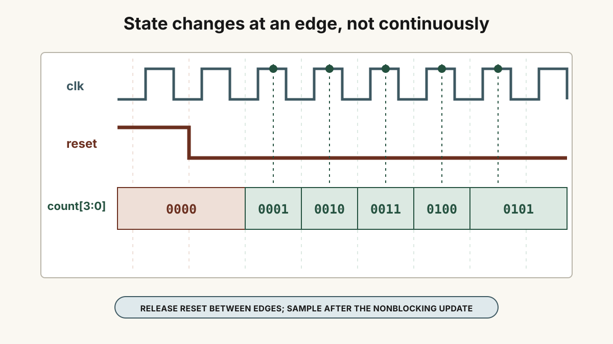
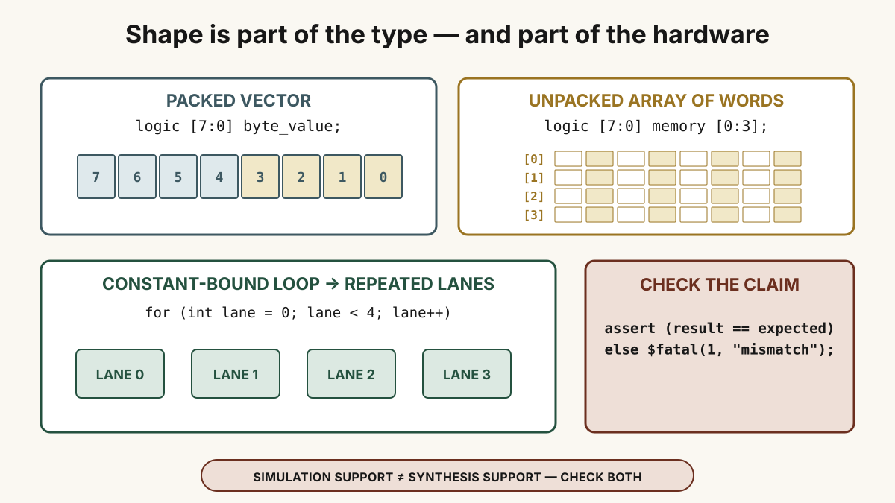

Begin With The Part’s Behavioral Contract
The Texas Instruments datasheet names the CD4029B a CMOS presettable up/down counter. Its digital behavior contains six ideas that deserve separate tests:
- It holds a four-bit state and exposes that state as four buffered outputs.
- It selects binary counting or BCD-decade counting.
- It selects up or down.
- It advances on a positive clock transition only when counting is enabled.
- Preset enable loads four jam inputs independently of the ordinary count step.
- An active-low carry output identifies the terminal state for cascading when carry-in permits counting.
The physical pin names are slightly hostile to software intuition. CARRY IN is low when counting is enabled, so it also acts as an active-low clock enable. BINARY/DECADE is high for binary and low for decade. UP/DOWN is high for up and low for down. PRESET ENABLE is high when jam inputs are loaded.
That table is already more useful than a paragraph that says “make a CMOS counter.” Each row can become stimulus plus an expectation.
Decide What “Recreate” Means Before Writing RTL
The physical CD4029B can asynchronously transfer jam-input data into its count when preset enable is high. A portable FPGA flip-flop usually offers a clocked data input and a limited set of asynchronous controls, often reset or set—not an arbitrary four-bit asynchronous data load.
Therefore keep two contracts visible:
- Reference behavior for simulation: model the datasheet’s control truth, including asynchronous preset, and use it as an oracle when exact pin behavior matters.
- Portable FPGA implementation: make the jam load synchronous to the rising edge. Preserve binary/decade, up/down, enable, terminal count, and wrap behavior while naming the preset difference explicitly.
Silently changing asynchronous preset into synchronous load would be a bad recreation. Naming the adaptation teaches a more important lesson: an HDL port is a contract, and the target fabric constrains which contracts map cleanly.
Write The FPGA-Portable Counter
The simple counter from chapter 4 supplies the clocked-state skeleton. Expand it with mode, direction, enable, jam data, and a synchronous load:
module cd4029b_counter (
input wire clk,
input wire load,
input wire enable,
input wire binary_mode,
input wire up,
input wire [3:0] jam,
output reg [3:0] q,
output wire carry_out_n
);
wire [3:0] maximum = binary_mode ? 4'd15 : 4'd9;
wire terminal = up ? (q == maximum) : (q == 4'd0);
assign carry_out_n = ~(enable && terminal);
always @(posedge clk) begin
if (load) begin
q <= jam;
end else if (enable) begin
if (up)
q <= terminal ? 4'd0 : q + 1'b1;
else
q <= terminal ? maximum : q - 1'b1;
end
end
endmoduleThe names are intentionally FPGA-friendly. enable is the logical inverse of the part’s active-low carry-in or clock-enable input. binary_mode is the positive form of the binary/decade selection. load is synchronous and must not be advertised as an exact replacement for the physical preset path.
In decade mode, constrain tests and normal use to valid BCD states zero through nine. The physical part allows jam inputs, but behavior from invalid decade states is not something to invent from intuition; derive it from the detailed device logic if an application needs it.
The complete runnable pair is cd4029b_counter.v plus cd4029b_counter_tb.v. Its Makefile and README.md keep the compile command and acceptance message beside the source.

Turn The Datasheet Into Test Vectors
Do not begin by staring at a waveform. Begin with claims that name starting state, controls, event, and expected result:
jam=5 and load=1, the next rising edge must produce five.enable=0, repeated rising edges must preserve the loaded value.A task can remove clock-driving repetition without hiding expectations:
task tick;
begin
@(negedge clk);
@(posedge clk);
#1;
end
endtask
task expect_q;
input [3:0] expected;
begin
if (q !== expected)
$fatal(1, "expected q=%0d, observed q=%0d", expected, q);
end
endtaskThe one-time-unit delay is not decorative. A nonblocking assignment schedules the register update after the active region of the clock event. Sample after that update or use clocking constructs designed for race-free verification.
Assertions Make The Acceptance Test Executable
An assertion is the executable form of “this must be true here.” For a small Icarus-compatible testbench, an immediate check plus $fatal is enough:
if (binary_mode == 1'b0 && q > 4'd9)
$fatal(1, "invalid decade state: %0d", q);SystemVerilog also has concurrent assertions for temporal properties, but simulator support and invocation flags matter. Begin with checks the chosen tool demonstrably runs. Then expand to properties such as “if enabled in binary-up mode at 15, the next sampled state is zero.”
The manuscript’s repeated USC language link is consolidated in chapter 5. This chapter owns assertion practice instead of repeating that external PDF a third time.

Packed Vectors And Unpacked Arrays Are Different Shapes
The handwritten “Verilog subtleties” list points repeatedly at arrays and indexing because tiny punctuation changes the type:
logic [7:0] byte_value; // one packed eight-bit vector
logic [7:0] memory [0:3]; // four unpacked elements, each an eight-bit vectorIn the first declaration, byte_value[7] selects one bit. In the second, memory[2] selects a byte and memory[2][7] selects one bit of that byte. The packed range is written before the name; the unpacked range follows the name.
Range direction is also real. [7:0] and [0:7] each contain eight bits, but their left and right indices differ. Do not assume that a bus, file format, or module boundary shares your preferred direction. State the mapping and test a non-symmetric pattern so reversed bits cannot pass unnoticed.
Whole-array assignment and multidimensional ports are much better supported in SystemVerilog than in older Verilog, but support still differs among simulator versions and synthesis tools. A construct accepted by one simulator is not automatically portable synthesizable hardware. Compile the supplied arrays-and-checks lab with the exact simulator and synthesizer versions you intend to use.
A For Loop Can Mean Repeated Hardware
The language-shapes lab computes the parity of four bytes:
always_comb begin
for (int lane = 0; lane < 4; lane++) begin
parity[lane] = ^memory[lane];
end
endIn simulation, the procedural loop executes according to HDL scheduling. In synthesis, the fixed bound allows the tool to elaborate four parity lanes. It is not a CPU loop that borrows one parity unit four times unless you explicitly describe a clocked controller and shared resource.
When Icarus reports a baffling loop or array error, reduce the problem before blaming the algorithm: confirm -g2012, confirm that the file is parsed as SystemVerilog, move declarations to syntax the installed version supports, and isolate a minimal example. Tool mode and language revision are part of the experiment.
Tasks, Functions, And Loops Solve Different Problems
A function returns a value and is useful for a calculation such as a reference next-state function. A task can perform a sequence of testbench actions, consume simulation time, and update several outputs; tick and expect_q are examples. A generate loop creates or conditions structural instances during elaboration. A procedural loop repeats statements inside one process.
Those categories overlap in surface syntax but not in intent. Keep synthesizable functions free of timing controls. Keep timed testbench tasks outside the design. Keep loop bounds static when you expect repeated combinational hardware. Confirm the supported subset in both simulator and synthesizer.
The Domain Language From Source To Board
.v module” and not a portable executable.The sequence is: source and selected top → synthesis and netlist → technology mapping → placement and routing with board constraints → configuration packing → bitstream → loader. Chapter 7 makes every artifact in that chain concrete.
The Manuscript’s Reference Trail, Reorganized
The original curriculum stored several useful questions as bare links. They are retained by topic instead of scattered through the course:
- Assertion syntax and simulator practice—use official language and tool documentation for final authority.
- Whole multidimensional-array assignment—a prompt to check SystemVerilog mode and tool support.
- An array-indexing failure case and vector and array indexing—both lead back to packed versus unpacked shape and declared range direction.
- An Icarus
for-loop issue—a reminder to record parser mode and version before diagnosing semantics. - Tasks and functions reading—historical course material behind the manuscript’s note.
- NTHU Verilog lecture (PDF)—another historical reference retained from the handwritten source.
Community answers are useful records of edge cases, not language standards. Keep the runnable local example and selected tool version beside every conclusion drawn from them.
Acceptance Check
The recreation is complete only when binary up, binary down, decade up, decade down, load, hold, both wrap boundaries, and carry polarity are self-checking; the waveform shows no invalid decade state; and the documentation states clearly that the FPGA-portable load is synchronous while the physical part’s preset path is asynchronous.